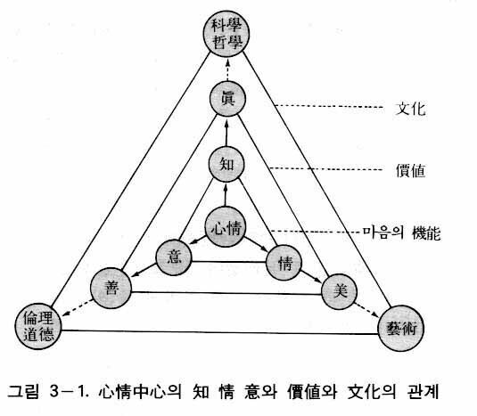

本性論は人間の本来の姿、すなわち堕落していない本性的人間を扱う哲学部門である。原相論と存在論において述べたように、人類は長い歴史の期間を通じて、人生と宇宙の根本問題を解決するために苦悶してきた。特に今日、共産主義の消滅後の新たな混乱の中で、南北問題、人種紛争、宗教紛争、領土紛争、不正腐敗の拡散、伝統的価値観の崩壊による各種犯罪の蔓延など、数えきれない数多くの問題が、対立と藤、闘争と戦争に結びつきながら、世界は混乱の渦の中に陥っているのである。このような問題は結局、「存在の問題」と「関係の問題」に大別されるのであるが、それはいかにして解決されるのであろうか。
一方、人類歴史の中には、現実の人間の姿に満足しないで、漠然とではあるが、人間の本来的な姿があるだろうという考えから、彼らなりの解答を見いだそうとした人たちがいた。彼らはまさしく宗教家であり、哲学者たちであった。彼らは「人間とは何か」という問題に直面しながら、いかにすれば本来の人間の姿を回復することができるか、その道を追究してきたのである。
紀元前五世紀ごろ、インドのカビラ城に生まれた釈は、修道、苦行の生活を通じて道を悟った。すなわち、人間は本来、仏性をもっているにもかかわらず、無明によって煩悩に縛られ苦痛に陥るようになったということを悟った。そして人間は修道生活を通じて本性を回復しなければならないと説いた。
イエスも三十余年の生涯において、人生問題を深く探求した結果、人間は罪人であること、そして神の子であるイエスを信ずることによって、再び生まれなければならないと説いた。そしてユダヤの人々に向かって「天国は近づいた。悔い改めよ」と叫んだのである。彼はパレスチナの各地を巡りながら、教えを広めるために全力を尽したが、実権を握っていた当時の政治や宗教の壁を越えることができず、結局、十字架の刑に処せられてしまった。
ソクラテスは当時のポリス社会の末期的な混乱相を直視し、真の知を愛することが人間の真の生き方であると説き、「汝自身を知れ」と叫んだ。プラトンは善のイデアを認識することが最高の生活であるといった。そして、アリストテレスは人間を人間たらしめているのは理性であるが、人間の徳はポリスにおける共同生活において実現されると考え、人間は社会的動物（ポリス的動物）であるといった。ギリシアの哲学者の人間観は、おしなべて人間の本質は理性であり、理性を十分に働かせれば、人間は理想の姿になるというものであった。
中世時代において、キリスト教が西欧社会の人間の精神を支配した。キリスト教の人間観は、人間は罪人であり、イエスを信ずることによって救われるというものであった。そのような立場から見るとき、人間の理性は人間の救いと平和な生活の実現に役立たないと見なされることもあった。ところが近代に至ると、再び人間の理性を重視する思潮が現れた。デカルトは、人間は理性的存在であって、理性でもってのみ正しい知識を得ることができるといい、「われ思う、ゆえにわれあり」（Cogito, ergo sum ）という有名な命題を残した。そしてカントは、人間は実践理性の命ずる道徳的義務の声に従う人格的存在であるといい、人間は誘惑や欲望に負けないで理性に従って生きるべきであると説いた。
ヘーゲルも人間を理性的存在であると見た。ヘーゲルによれば、歴史とは理性が世界の中で自らを実現する過程であり、歴史の発展とともに、理性の本質である自由が実現されるのである。そのようなヘーゲルの説によれば、近代国家（理性国家）の成立とともに、人間と世界は合理的な姿になるはずであった。ところが現実において、実際の人間は人間らしさを喪失したままであり、世界は非合理的なままであった。
このようなヘーゲルの極端な理性主義に反対したのがキルケゴールであった。キルケゴールは、世界の発展とともに人間は合理的な存在になるというヘーゲルの主張に反対し、人間は現実社会において、真の人間性を失った平均的人間にすぎないと主張した。したがって、大衆から離れて、単独者として、主体的に人生を切り開くとき、初めて真の人間性が回復されるのである。そのように現実の人間を本性を失った人間としてとらえ、主体的に人間性を取り戻そうとする考え方が、それ以後、実存主義思想として展開された。それに関しては、のちに再び述べることにする。
また、ヘーゲルの理性主義に反対して、人間を感性的人間としてとらえたのがフォイエルバッハであった。フォイエルバッハによると、人間は類的本質である理性、意志、心情（愛）をもつ類的存在であるが、人間はその類的本質を自分から分離して、対象化し、それを神として崇めるようになった。そのようにして人間は人間性を喪失するようになったと見たのであった。したがって、人間が本性（類的本質）を取り戻す道は対象化した神を否定すること、すなわち宗教を否定することによってのみ可能であると主張した。
そしてヘーゲルの自由の実現の思想から出発して、人間の真なる解放を主張したのがマルクスであった。マルクス当時の初期資本主義社会において、労働者の生活は悲惨であった。彼らは長時間の労働を余儀なくされ、しかも最低の生活を維持するのも難しい程度の賃金しかもらえなかった。労働者の間では病気と犯罪が蔓延しており、彼らは人間性を奪われていた。一方、資本家は裕福な生活をしていたが、労働者を無慈悲に搾取し、抑圧しており、彼らも本来の人間性を失っているとマルクスは考えた。人間解放に立ち上がったマルクスは、初め、人間による人間性の回復というフォイエルバッハの人間主義から出発したが、やがて人間は類的存在であるのみならず、生産活動をする社会的、物質的、歴史的存在であり、人間の本質は労働の自由であると考えるようになった。しかるに資本主義社会において、労働者は労働生産物をすべて資本家に奪われており、労働そのものが自分の意志ではなく資本家の意のままになっている。そこに労働者の人間性の喪失があるとマルクスは考えたのである。
労働者を解放するためには、労働者を搾取する資本主義社会を打倒しなくてはならない。そうすることによって資本家もまた人間性を回復するとマルクスは考えたのである。そして彼は、唯物論の立場から、人間の意識を規定しているのは社会の土台である生産関係であると主張し、資本主義の経済体制を暴力的に変革しなくてはならないと結論したのであった。ところが、マルクスの理論に従って革命を起こして成立した共産主義国家は、自由の抑圧と人間性の蹂躙の甚だしい独裁社会となって、人間はますます本来の姿を喪失してしまった。これはマルクスが人間疎外の原因の把握において、そして人間疎外を解決する方法において、大きな間違いを犯したことを意味しているのである。
ところで、人間の疎外は過去の共産主義社会だけの問題ではない。資本主義社会においても、個人主義と物質中心主義が蔓延し、自分で考えたことはどんなことでもやってもよいという利己的な考え方が広まり、ますます人間性は失われているのである。
人間学がすべての学問と思想の根本であると考えたマックス・シェーラー（Max Scheler, 1874-1928）は、『哲学的世界観』の中の「人間と歴史」において、人間を思考する知性人（homo sapiens）、道具を制作し使用する工作人（homo faber）、そして宗教人（homo religiosus）の三つの類型に分類した。そのほかに人間を経済人（homo economicus ）、自由人（homo liberalis）、国家人（homo nationalis）などと見る立場もあった。しかし、それらはいずれも人間の姿をとらえていなかったのである。
このように、人間とは何であり、人生とは何であるかという問題は、人類歴史が始まって以来、数多くの宗教家や哲学者たちによって、その解決が試みられたが、すべてが失敗に終わったのである。そして人生を正しく生きようとしたが人生の意味が分からず、虚無な人生を悲観して自殺した人も数多くいるのである。韓国の尹心悳、日本の藤村操などがその代表的な例である。
このような歴史的に未解決の人間の問題を根本的に解決しようとして、その生涯をかけて歩んでこられた方がいらっしゃる。その方がまさに文鮮明先生である。そして文先生は、統一原理において明らかにされたように、人間は、たとえ本来の姿を失って惨めな存在になっているとしても、本来、みな神の子であると宣言されたのである。
人間は神に似せて造られたが、人間始祖の堕落によって、神とは関係のない存在となってしまった。しかし神のみ言に従って生きて、神の愛を受けるようになれば、本来の姿を取り戻すことができるのである。本章では、人間の堕落の問題や人間性の回復の方法について論ずるのではなくて（それに関して『原理講論』の「堕落論」と「復帰原理」を参照のこと）、ただ本来の人間の姿はいかなるものかを論ずることにする。人間の本来の姿は神相に似た神相的存在であり、神性に似た神性的存在である。そして原相の格位性に似た格位的存在である。次に、これらに関して詳しく論ずることにする。
原相が性相と形状、陽性と陰性の普遍相、および個別相をもっているように、そのような原相に似た本然の人間も、例外なく性相と形状、陽性と陰性の普遍相、および個別相をもっている。このような存在を神相的存在という。まず性相と形状に似たという点について見ることにする。
人間が神の性相と形状に似るということは、人間が心と体の二重体、すなわち性相と形状の統一体であることを意味する。
人間の性相と形状には四つの類型がある。まず第一に、人間は宇宙を総合した実体相である。すなわち人間は性相と形状において、それぞれ動物、植物、鉱物の性相と形状の要素をみなもっている。第二に、人間は霊人体と肉身の二重的存在である。第三に、人間は心と体が統一を成している心身統一体である。そして第四に、人間は生心と肉心の二重心の統一体として、二重心的存在である。
ここで人間が本来の姿を失ったという観点から見るとき、第四の生心と肉心の二重心的存在という点が特に重要である。したがって本項で扱う「性相と形状の統一体」は、まさに「生心と肉心の統一体」と同じ意味になる。ここで生心と肉心が両者共に心であるにもかかわらず、生心と肉心の関係を性相と形状の関係としたのは、生心は霊人体（性相）の心であり、肉心は肉身（形状）の心であって、生心と肉心の関係は霊人体と肉身の関係と同じであるからである。次に、生心と肉心の機能について説明する。
生心の機能は真善美と愛の生活、すなわち価値生活を追求する。ここで愛は、生命の源泉であると同時に真善美の基盤である。したがって、愛を中心とした真善美の生活が価値の生活である。人間の価値生活には自分自身が価値を追求して喜ぶという面もあるが、価値を実現して他人を喜ばせるというのがより本質的な面である。したがって価値生活とは「ために生きる」愛の生活、すなわち家庭のため、民族のため、国家のため、人類のために生きる愛の生活なのである。そして究極的には神のために生きるということである。一方、衣食住と性の生活、つまり物質的な生活を追求するのが肉心の機能である。物質生活は個人を中心とした生活である。
生心と肉心は本来、主体と対象の関係にある。霊人体が主体であり、肉身が対象であるからである。したがって肉心が生心に従うのが本来の姿である。生心と肉心が合性一体化したものが人間の心であるが、生心が主体、肉心が対象の関係にあるときの人間の心を本心という。肉心が生心に従うということは、価値を追求して実現する生活を第一義的に、物質を追求する生活を第二義的にするということである。言い換えれば、価値生活が目的であり、衣食住の生活はその目的を実現するための手段である。そればかりでなく、肉心が生心に従い、その機能をよく果たせば、霊人体と肉身は互いに共鳴する。この状態が人格を完成した状態、すなわち本然の人間の姿である。
ところが人間は堕落したために、生心と肉心の本来の関係を維持することができなくなってしまった。対象であるべき肉心が主体の立場に立ち、主体であるべき生心が対象の立場に立ってしまったのである。そのために衣食住の生活が目的となってしまい、価値生活は衣食住のための手段となり、二次的なものとなってしまった。すなわち、人を愛することや真善美の行為が、富を得るとか地位を得るなどの目的のためになされるようになったのである。今日、日常的な人間生活において、価値生活が全くないのではないが、多くの場合、価値生活を自己中心的な物質生活のための手段としているのである。それは肉心が主体、生心が対象になったからである。
このように生心と肉心の本来の関係が逆転してしまったのが人間の実態である。したがって人間の本来の姿を回復するためには、この逆転した関係を元に戻さなくてはならない。それが人間が修道生活をしなければならない必然的理由である。そのため今日まで、すべての宗教において、まず自己との闘いに勝利せよと教えたのである。
例えば孔子は「己れに克て礼に復る」（克己復礼）といい、イエスは「自分の十字架を負って私に従ってきなさい」とか、「人はパンだけで生きるものではなく、神の口から出る一つ一つの言で生きる」と語られたのであった。そして自己との闘いに勝つために人々は断食、徹夜祈祷などの修道生活を行わなくてはならなかったのである。
そのように肉心を生心に屈伏させながら、真善美の生活を優先し、衣食住の生活をあとにして生きていくのが生心と肉心の統一である。しかし人間は堕落したために、肉心が生心を抑え自己中心的な衣食住の生活を行うようになったのである。そしてそこから人間のすべての苦痛と不幸が生じたのである。
本心は生心と肉心が授受作用をして合性一体化したものである。それが神の性相内の内的四位基台に似た状態である。それゆえ本心の先次的な機能は、生心による愛の生活であり、真善美の価値を追求する生活である。したがって人間はまさに愛的人間（homo amans）なのである。価値の生活とは、真実の生活であり、倫理的・道徳的生活であり、芸術的生活である。そして本心の後次的な機能は肉心による衣食住の生活、すなわち物質的生活を追求することである。
陽性と陰性は性相と形状の属性であるが、本性論でいう陽性と陰性とは陽性実体、陰性実体としての夫婦のことをいう。
夫婦はいかに生きるべきか、家庭はいかにあるべきかという問題は、古今東西を問わず重要な問題であった。動物も、植物も、鉱物も、みな陽陰の結合によって存在し繁殖している。万物がそうであるから、人間における陽陰の結合すなわち夫婦の結合も、単純な男女の肉体的な結合であると見やすい。だがそれは夫婦を生物学的な観点から見る立場である。そのような立場に立てば、今日の先進諸国のように、男女が簡単に結婚しては簡単に離婚するというようになり、結婚の神聖性や永遠性は失われやすいのである。しかしそれは本来の夫婦の姿ではない。
男と女はなぜ存在するのか、結婚は何のためにするのかという問題に対して、今まで真の解答がなかった。そのため一生、独身生活を貫くという人も少なくなかったのである。この問題に対して、統一思想は明瞭な答えを与えている。
第一に、本然の夫婦はそれぞれ神の陽性と陰性の二性性相中の一性を代表する存在である。したがって夫婦の結合は、陽性・陰性をもつ神の顕現を意味するのである。夫婦が神を中心として横的に愛し合うとき、神の縦的な愛がそこに臨在するようになり、ここに愛の相乗作用による生命の創造がなされるようになるのである。
第二に、本然の夫婦の結合は神の創造過程の最後の段階であるため、それはまさに宇宙創造の完了を意味するのである。したがってアダム・エバが堕落しなければ、アダム・エバの完成とともに宇宙の創造は完了したはずであった。しかし、アダム・エバが完成しなかったために、宇宙創造は完了しなかった。だから、今日まで神は再創造の摂理をなされてきたのである。再創造とは、堕落した人間をして、個性を完成せしめ、さらに夫婦として完成せしめるということである。人間は万物の主管主として造られたが、男一人では、あるいは女一人では、主管主となることはできない。夫婦として完成して、初めて人間は万物の主管主となるのである。そしてその時、宇宙創造が完了するのである。
第三に、本然の夫婦はそれぞれ人類の半分を代表する存在である。したがって夫婦の結合は、人類の統一を意味するのである。すなわち夫婦においては、夫は全人類の男性を代表しており、妻は全人類の女性を代表しているのである。現在、世界の総人口は約六十億人といわれている。したがって、それぞれ三十億人を代表する価値をもっているのが夫であり、妻である。
第四に、本然の夫婦はそれぞれ家庭の半分を代表する存在であり、したがって夫婦の結合は家庭の完成を意味するのである。家庭において、夫はすべての男性を代表し、妻はすべての女性を代表する立場であるからである。
以上のような立場から見るとき、夫が妻を愛し、妻が夫を愛するということは、その家庭における神の顕現と宇宙創造の完了を意味し、人類の統一と家庭の完成を意味する。このように夫婦の結合は、実に神聖にして尊い結合なのである(1)。
ところで夫婦の調和は家庭的四位基台の形成を通じてなされる。家庭的四位基台の形成とは、創造の時に人間に与えられた第二祝福の完成を意味するものであるが、それは神を中心として人格的に完成した夫と妻が相対基準を造成し、愛と美を授け受けることによってなされる。そのとき夫婦の一体化は、原相内の主体と対象の調和に似るようになる。すなわち原相の自同的四位基台に似るのである。そして夫婦の子女繁殖は神の人間創造に似ているが、それは原相の発展的四位基台に似ているのである。そのとき、夫婦はそれぞれ本心に従って生きながら、互いに調和を成すのである。
本心に従って生きるということは原相の内的四位基台に似ることであり、互いに調和を成すということは原相の外的四位基台に似ることである。夫婦がそれぞれ完全に原相の姿に似て人格者として成熟したのち、創造目的を中心として互いに愛を授け受ける授受作用を行うようになれば、神の愛がそこに臨在するようになる。家庭は夫婦の横的愛と神の縦的愛が合致するところであるからである。そのように神の愛を中心として完成した家庭が集まって社会を成し、さらに進んで国家、世界をこの地上に立てるようになれば、それがまさに地上天国であり、神の創造理想を完成した世界となるのである。
原相論において明らかにしたように、神の創造理想を完成した世界とは、本然の秩序を通じて実現される愛の世界をいう。ここで、秩序と愛に関して述べることにする。人間は宇宙の縮小体であるが、家庭も宇宙の縮小体である。そのとき、人間は構成要素から見た宇宙の縮小体であり、家庭は秩序から見た宇宙の縮小体なのである。
家庭が秩序から見た宇宙の縮小体であるということは、宇宙の縦的秩序と横的秩序に似て、家庭にも縮小された形態としての縦的秩序と横的秩序があるということを意味する。家庭における縦的秩序とは、祖父母→父母→子女→孫とつながる秩序のことをいうのであり、横的秩序とは夫婦間そして兄弟姉妹間の秩序をいう。愛はこのような秩序を通じて実現される。そして愛には縦的愛と横的愛があるのである。縦的愛とは、父母の子女に対する下向愛と、子女の父母に対する上向愛であり、横的愛とは、夫婦間の愛、子女相互間の愛などの水平愛である。
このような愛の基本形を土台として、縦的価値と横的価値の基本となる家庭倫理が成立する。縦的価値とは、父母の子女に対する愛である慈愛であり、子女の父母に対する愛である孝誠である。横的価値とは、夫婦間の愛である和愛であり、子女相互間の愛である友愛である。こうして倫理は、家庭を基盤とする家族構成員の相互間で守られなければならない行為の規範となるのである（これに関しては、倫理論において詳細に論ずる）。こうした家庭倫理を社会、企業、学校などに拡大したものが、それぞれ社会倫理、企業倫理、学校倫理であり、隣人愛、民族愛、怨讐に対する愛、自然保護運動などは、みな家庭倫理を土台としたものである。
このような観点から、本性から見た人間観を一言で表現するとすれば、愛的人間となるのである。ところが堕落によって、人間は人格的に完成できなかった。そして未完成のアダムとエバは、本然の夫婦となることはできなかった。すなわち夫婦は神の愛を中心として一つになることができず、神を喪失してしまった。そして宇宙創造は未完了の状態のまま、今日まで続いてきたのである。
今日、家庭問題や社会問題が深刻になっているが、これらは夫婦の姿がみな本来的でないところにその原因がある。そのために家庭と社会が乱れ、国家と世界が混乱に陥っている。したがって夫婦が和愛によって調和を成して一つになるということは、まさに世界の統一と直結する必須不可欠の前提条件となるのである。したがって夫婦の和愛の問題は、社会問題や世界問題を解く鍵であるといえる。
神は宇宙の創造において、まず完成した人間の姿を構想され、それを標準として実体対象として被造世界を展開された。したがって被造万物は原因者である神の原相に象徴的に似た個性体であり、人間は原相に形象的に似た個性体である。個性体とは、原相の個別相に似た個性真理体という意味である。
個性真理体は普遍相と個別相をもつ個体であるが、個別相に重点を置いて扱うときの個性真理体を個性体というのである。個性体としての人間の個別相は、動物や植物とは違って、個人ごとにその個別相が顕著であり、顔や性格などが人によって異なるのはそのためである。したがって動物や植物においては種類別の個別相であるが、人間においては個人別の個別相である。
そのように神が、人間に個人ごとに独特な個別相を与えたのは、人間一人一人から特有の刺激的な喜びを得るためであった。したがって人間は、特有の個性をもって神に最高の喜びを返す最高の価値をもつ存在である。そのような個別相も人間の本性の一つである。ところでこのような個別相は、次のような三つの側面において、人間の特性として現れる。
第一の特性は、容貌上の特性である。世界に六十億の人間がいても、同じ容貌や体格をもつ人は一人もいない。第二の特性は、行動上の特性である。人間の行動の様式は一人一人みな異なっている。行動は心の直接の現れであるから、容貌を形状の特性とすれば、行動は性相の特性の現れであるということができる。第三の特性は、創作上の特性である。芸術の創作だけでなく、創造性を発揮するすべての活動はみな創作の概念に含まれる。そういう意味で、創造性を発揮して一日を生きたとすれば、その一日の生活の足跡は一つの作品となるのである。このような意味の創作もまた人によって異なるのである。そればかりでなく人間の一生の足跡も、一つの作品（生の作品）なのである。
したがって神は、本性的な人間の一人一人の容貌を見て喜ばれ、行動を見て喜ばれ、また作品を見て喜ばれるのである。神が個々の人間を見て喜ばれるということは、個々の人間が容貌や行動や創作でもって、神に固有の美を返すことを意味する。それが個性美である。したがって個性美とは、容貌上の個性美であり、行動上の個性美であり、創作上の個性美である。
父母が子女を見るとき、特性においてどの子も美しく愛らしいと思う。子女は父母の表現体であるからである。同様に、神が人間に対するとき、その人間の容貌、行動、創作活動において、美しさを感じて喜ばれるのである。そのような人間の個性は、神から来たもの、すなわち神来性のものであるために尊いのである。人間が人間の個性を尊く思い、相互に尊重しなければならない理由はまさにその点にあるのである。
ところが人間の堕落によって、今日まで人間の個性は無視され、人権が蹂躙される場合が多かった。特に独裁社会においては、なおさらそうであった。共産主義社会がその顕著な例であった。共産主義は唯物論を根拠として、人間の個性を環境の産物と見て軽視したのである。人道主義は人間の個性の尊重を主張した。しかし、なぜ人間の個性が尊重されなければならないのかということに対して、人道主義には哲学的な答えがないために、哲学をもつ共産主義の批判に耐えることができなかった。それに対して統一思想は、人間の個性は偶然的なものでもなく、環境の産物でもなく、神の個別相に由来するもの、すなわち神来性であるから、尊貴なものであるという確固たる神学的・哲学的根拠を提示しているのである。
人間はまた神の神性に似ている。神性には、全知、全能、心情（愛）、遍在性、生命、真、善、美、正義、ロゴス、創造性などいろいろなものがあるが、その中で重要なものを三つだけを扱うことにする。その三つは、現実問題の解決に特に重要な属性であるからである。それが心情、ロゴス、創造性である。そのような三つの神性に似ているという側面から人間を見ると、人間は心情的存在であり、ロゴス的存在であり、創造的存在である。これらに関して、次に詳細に説明することにする。
心情は、原相論において明らかにしたように「愛を通じて喜びを得ようとする情的な衝動」である。心情はまた、「愛の源泉」であり、「愛さずにはいられない情的な衝動」であり、原相の核心をなしている。したがって心情は、性相の核心となっているのである。そればかりでなく、心情は神において人格の核心である。イエスが「あなたがたの天の父が完全であられるように、あなたがたも完全な者となりなさい」（マタイ五・四八）といわれたのは、人間が神の人格、すなわち神の心情に似るようにという教えである。
人間においても、心情は人格の核心となる。したがって人格の完成は、神の心情を体恤するとき、初めて可能となるである。神の心情を体恤することによって人格を完成した人間が、まさに心情的存在である。
人間が神の心情を継続的に体恤すると、ついには神の心情を完全に相続するようになる。そのような人間は、自然に人や万物を愛したくなる。愛さなければ、かえって心が苦しくなるのである。堕落人間は、人を愛することを難しく感じるが、神の心情と一致すれば、生活そのものが愛となる。愛があれば、持てる者は持たざる者に与えるようになる。愛は自己中心的なものではないからである。したがって貧富の差や搾取などは、自然に消滅するようになる。そのような愛の効果は愛の平準化作用に起因するのである。そのように人間が心情的存在であるということは、人間が愛の生活を行う存在であるということである。したがって人間は、愛的人間（homo amans）なのである。
心情は人格の核心であるから、人間が心情的存在であるということは人格的存在であることを意味する。それは心情を中心として生心と肉心が円満な授受作用を行うようになることを意味し、さらに心情を中心として知情意の機能が均衡的に発達するようになることを意味する。
堕落した人間において、生心の機能が弱く肉心が生心を主管している場合が多い。また理性（知的能力）が非常に発達していても、情的に未熟であったり、善を行おうとする意志力が乏しかったりする場合がある。しかし人間が神の心情を相続して心情的存在になれば、知情意は均衡的に発達し、また生心が主体の立場から肉心を主管しながら、生心と肉心が円満な授受作用を行うようになるのである。
心情はまた、性相の核心として、知情意の機能を刺激する原動力である。知情意はそれぞれ真美善を追求する機能である。すなわち知は認識する能力であって、真の価値を追求し、情は喜怒哀楽を感じる能力であって、美の価値を追求し、意は決意する能力であって、善の価値を追求するのである。そしてこれらの価値の追求はすべて本来、心情を動機としてなされるのである。知的活動によって真理を追求すれば、その成果は科学、哲学などの学問として現れる。情的活動によって美を追求すれば、その成果は芸術として現れる。意的活動によって善を追求すれば、その成果は道徳、倫理などとして現れる。
政治、経済、法律、言論、スポーツなども、みな知情意の活動の成果である。したがって心情は、知情意を中心としたすべての文化活動全体の原動力となるのであり、特に芸術活動の原動力となっている。そしてこのような知情意の活動の成果の総合が、まさに文化なのである。本然の世界においては、心情的な人間（愛の人間）が文化活動の主役となる。以上の内容を図で表現すれば、図３―１のようになる。

このように心情は、文化活動の原動力である。したがって人間が実現しなくてはならない文化は本来、心情文化であった。それが真の文化であり、神がアダムを通じて実現しようとされたアダム文化であった。しかしアダムの堕落によって、心情文化は実現されず、今日に至るまで利己心を基盤とした文化、すなわち知的活動、情的活動、意的活動が統一されない分裂した文化が築かれてきたのであった。
例えば経済活動において、今日まで金もうけが最高の目的と見なされる場合が多かった。しかし、本然の世界では、他の人々が貧しい生活をしているのに、自分だけ裕福な生活をすれば心が苦しくなる。それでお金をたくさんもうければ、隣人や社会に施そうとするのである。すなわち、企業活動を通じて神の愛を実践しようとするのである。経済のみならず、その他のすべての領域においても、人々は愛を実現しようとする。そうして、心情文化、愛の文化が立てられるのである。そのとき、知的活動、情的活動、意的活動は愛を中心として統一されるようになる。それが統一文化である。そのように、愛の文化は統一文化なのである。
今日まで人類は真の文化、恒久的な文化を実現しようと何度も試みてきたが、結局は失敗に終わってしまった。人類歴史において、いろいろな文化が興亡盛衰を重ねてきた事実が、そのことを証明している。それは真なる文化、恒久的な文化がいかなるものか、分からなかったからである。共産主義方式の中国の文化運動である「文化大革命」もその一例であった。唯物弁証法の立場から、労働を基盤とした文化が真なる文化であると見なして、行われた文化革命であったが、その結果、人間性の抑圧と近代化の遅れと経済の破綻を招いただけであった。真なる文化とは、心情を中心とした文化である。文先生が唱えている新文化革命とは、まさにそのような心情文化の建設運動なのである。
ここで文化と文明の概念に関して説明する。知情意の活動の成果の総和を科学や技術などの物質的側面から見るとき、それを文明といい、特に宗教、芸術などの精神的側面から見るとき、それを文化というのである。しかし、人間の活動の成果を精神面と物質面に明確に区別することは容易ではないために、一般的に文化と文明を同じ意味で使う場合が多い。統一思想においても、一般の場合と同様に、文化と文明を同一の意味で使用する場合が多い。
ロゴスという言葉は原相論において明らかにしたように、原相内において創造目的を中心とした内的授受作用の産物、すなわち新生体を意味する。ここで、創造目的は心情が基盤となっているために、ロゴスにおいても心情がその基盤となっている。
宇宙はそのようなロゴスによって造られ、ロゴスに従いながら運行している。すなわち、ロゴスによって支えられている。そして人間もロゴスによって造られ、ロゴスに従って生きるようになっているのであり、人間はロゴス的存在である。
ロゴスとは、すでに述べたように、原相の性相において、目的を中心として内的性相と内的形状が授受作用を行ってできた新生体であるが、内的性相の中の理性と内的形状の中の法則が特に重要な働きをなしているから、ロゴスは理性と法則の統一体としての理法になるのである。したがって人間がロゴス的存在であるとは、人間が理法的存在であることを意味するのである。ここにおいて、理性と法則の特性はそれぞれ自由性と必然性であるから、ロゴス的存在であるということは、自由性と必然性を統一的にもっている存在であることを意味する。すなわち人間は、自由意志に基づいて行動する理性的存在でありながら、法則（規範）に従って生きる規範的存在なのである。
今日、人間は自由なのだから、法則（規範）に従って生きるのは一種の束縛であるといって、法則を否定する考え方が蔓延している。しかし、真の自由は法則を守るところにある。しかも自ら進んで守るところにある。法則を無視した自由は放縦であって、破滅をもたらすしかないからである。例えば、列車はレールの上にあることによって、早く走ったり遅く走ったりすることができる。また前に進んだり、後ろに戻ったりすることもできる。けれどもレールを外れると、列車は全く走れなくなる。すなわち、列車は軌道の上にあるとき、初めて自由があるのである。軌道を外れると列車も破壊されるし、人間や家々にも莫大な被害を与えるのである。
それと同じように、人間も規範に従って生きるときに真の自由が得られるのである。孔子は『論語』において、「心の欲する所に従えども、矩をこえず(2)」といったが、それは孔子が七十歳になって、ようやく自由意志と法則を統一した完全なロゴス的存在になることができたことを意味するのである。
人間はロゴス的存在であるから、法則に従おうとするのが本来の姿である。人間の守るべき法則とは、宇宙に作用している法則、すなわち授受作用の法則のことである。ところで原相においてロゴスが形成されるとき、その動機は心情であった。したがって宇宙の法則は本来、心情を動機としたものであり、愛の実現を目的としたものなのである。
存在論で述べたように、家庭は宇宙の秩序体系の縮小体である。したがって宇宙に縦的、横的な秩序があるように、家庭においても、縦的、横的な秩序がある。縦的秩序と横的秩序に対応する価値観が縦的規範（縦的価値観）と横的規範（横的価値観）である。家庭における縦的規範とは、父母と子女の間における規範であり、横的規範とは、兄弟姉妹の関係、および夫婦の関係における規範である。また人間には個人として守るべき規範、すなわち個人的規範もある。それは個人としての人格を完成し維持するための規範である。（これら縦的規範、横的規範、個人的規範については、価値論と倫理論において詳しく説明することにする。）
家庭におけるこのような規範は、社会や国家にそのまま拡大適用される。結局、家庭の規範は、社会や国家が守るべき規範の根本となっているのである。しかし堕落によって、人間はロゴス的存在になれなかった。その結果、社会も国家も混乱状態に陥ってしまったのである。人間がロゴス的存在としての本性を回復するとき、家庭も社会も国家も本来の秩序をもった姿に帰ることができる。
神は、その創造の能力すなわち創造性によって宇宙を造ったが、その創造の能力を人間にも与えられた。それゆえ人間は、今日まで創造性を発揮して、今日まで科学や技術を発達させてきたのである。
それでは、創造性とは具体的に何であろうか。神の創造性は心情を基盤とした創造の能力である。すでに原相論で明らかにしたように、宇宙の創造に際して、原相内部には次のような二段階の授受作用が行われた。第一は、内的授受作用であり、第二は、外的授受作用である。内的授受作用は心情によって立てられた目的を中心として、内的性相と内的形状の間に行われる授受作用であり、その授受作用によってロゴスが形成された。そして外的授受作用は同じ目的を中心として、ロゴスと形状（本形状）の間に行われる授受作用であり、その授受作用によって被造物が生成したのである。この二段階の授受作用は、二段階の発展的四位基台の形成を意味する。したがって神の創造性とは、結局、この二段階の発展的四位基台の形成能力、すなわち内的発展的四位基台および外的発展的四位基台の形成の能力なのである。
人間も同様に、何かを造るとき、まず目的を立てて、設計をしたり、構想を練ったりする。すなわち内的授受作用を行う。そして次に、その構想に従って物を造る。すなわち外的授受作用を行うのである。神が人間に創造性を与えられたのは、人間が心情に基づいて、愛でもって万物を主管するためであった。主管とは、物的対象（自然万物、財貨など）や人的対象を扱ったり、治めることを意味するが、特に万物主管は物質を扱うこと、すなわち管理、処理、保存などを意味する。産業活動（一次産業、二次産業、三次産業）や政治、経済、科学、芸術など、物質を扱う一切の活動は、みな万物主管に営まれる。神の愛をもってこのような主管活動をするのが本然の主管である。すなわち人間が神の創造性を完全に受け継いでいたならば、これらの活動はみな神の愛を中心として営まれるようになっていたのである。
神は人間を創造し、万物を治めよ、主管せよといわれた（創世記一・二八）。ところで、人間が神のみ言に従って万物を主管しようとするならば、万物を主管することのできる主管主としての資格を備えなければならない。神は大主管主であるために、人間を主管することのできる資格として創造性を備えているが、同様に、人間も万物を主管することのできる主管主としての資格を備えるためには、神の創造性をもたなければならない。したがって神は、人間に創造性をもたせるために、成長期間を置いて、人間が責任分担を完遂することによって人格的に完成するようにされたのである。それゆえ人間は、その成長期間を通じて完成することによってのみ、神の創造性を与えられ、万物を主管することのできる資格を得るようになっているのである(3)。
ところで、本来、主管とは自分が造ったもの（自分のもの）を主管するのであって、他人が造ったもの（他人のもの）を勝手に主管することはできない。したがって、万物の創造が終わったあとに造られた人間は、そのままでは万物を主管することはできないのである。しかし、人間は神の子女として造られたために、また子女は成長すれば父母の権限を相続することができるために、神はアダム・エバをして主管権を相続することのできる条件を立てさせるようにされた。すなわち、責任分担を果たしながら成長するように命令されたのである。その条件とは、人間も宇宙の創造偉業に参加したということと同一の価値の条件をいうのであり、それがまさに人間が自らの責任分担のもとで自身を完成させることであった。
人間は万物を総合した実体相であり、小宇宙であって、人間一人の価値は宇宙の価値に匹敵するものである。したがって、人間が自分の責任分担で自身を完成させれば、その努力は宇宙を完成させたこと（創造したこと）と同一の価値の努力となるのである。それが、まさに神がアダム・エバに責任分担を果たすようにせしめられた理由であった。すなわち神は、アダム・エバに神の創造の偉業に参加したという条件を立てさせるために、彼らが責任分担を全うすることによって完成するようにされたのである。したがって、神はアダム・エバの成長期間において、善悪を知る木の実を取って食べてはならない（性的関係を結んではならないということ：『原理講論』一〇三頁）という戒めを与えたのちには、彼らの行為に対して、一切、干渉されなかったのである。もし干渉すれば、人間の責任分担を神自らが無視する立場になり、未完成なアダム・エバをして万物を主管させるという矛盾を招くからである。しかしアダム・エバは、その戒めを守ることができなかったので、万物を主管する資格を得ることができなかったのである。
その結果、人間は神の創造性を受け継ぐことができなくなり、自己中心的な理性に基づいた創造を行うようになった。それで個人レベルの創造の場合は自分の利益を先に考え、家庭レベルの創造の場合は自分の家庭の利益だけを考え、国家レベルの場合は自分の国家の利益だけを優先的に考えるようになった。そうして創造活動はほとんど自己中心的になってしまったのである。また人間は、長い間、自然はどうなってもよいという考え方をもち続けてきた。その結果、自然破壊や公害、殺戮兵器の開発など、様々な問題が生じるようになったのである。
それゆえこのような問題を解決するためには、人間が心情を中心とした本来の創造性を発揮するようにならなくてはならないのである。心情が創造性の中心となるということは、愛を動機として創造が行われなくてはならないということを意味し、正しい価値観に基づいて創造活動がなされなければならないことを意味する。したがって科学者は、科学者である前にまず価値的な人間、すなわち人格者でなければならないのである。言い換えれば、倫理が自然科学の基盤とならなくてはならないのである。
ところが近代以後、科学者たちは客観的な事実だけを探求し、一切の価値観を排除してきた。その結果、今日のような混乱状態となった。「科学の統一に関する国際会議」が開かれる度に、文先生が科学者たちに価値観を扱うように強調されるのは、科学者たちが真の創造性を回復するようになるためである。すなわち、「自然を愛し、人間の価値性を再考し、すべての人類が愛し合い、そして愛の根源としての神を探す(4)」という前提のもとに、科学者たちが真なる創造性をもつように願われるためである。
人間はまた原相の主体と対象の関係性に似て、主体格位と対象格位をもっている。人間はまず子女として父母の前に対象の位置にあるが、成長すれば父母になり、子女に対して主体の位置に立つ。また社会生活においても、下位の職位から出発して次第に上位の職位に上っていく。したがって人間は、まず対象格位にあり、次第に主体格位に移っていくのである。
対象格位は、主体の主管を受ける立場であると同時に、主体に喜びを返すことにその意義がある。人間は、神の喜びの対象として造られた。したがって、神に対して対象格位にある人間の生活の第一次的な意義は、神を喜ばせるところにある。
そのように人間は、まず神に対して対象の位置に立っているために、神を代身する位置に対しても対象格位に立つようになる。神を代身する位置とは、例えば次のようなものがある。すなわち国民に対する大統領や国王、子女に対する父母、生徒に対する先生、部下に対する上司、そして個人に対する全体などである。言い換えれば、人間が神の対象であるように、国民は大統領や国王の対象であり、子供は父母の対象であり、生徒は先生の対象であり、部下は上司の対象であり、個人は全体の対象なのである。
人間はいろいろな主体と関連を結びながら生きていくのであるが、対象格位にある人間は主体の主管を受ける立場にあるために、対象として主体に対する一定の心的態度が要求される。それが対象意識である。まず神に対する人間の対象意識は、神に侍る心、すなわち侍奉心と忠誠心である。国家に対する国民の対象意識は、忠誠心である。子女の父母に対する対象意識は、孝誠心（孝行心）である。先生に対する生徒の対象意識は、尊敬心または服従心である。上司に対する部下の対象意識は、服従心である。全体に対する個人の対象意識は、奉仕の心である。そしておのおのの主体に対する対象の共通した対象意識は、温柔と謙遜、そしてために生きようとする心である。
ところで堕落世界において、歴史上、多くの独裁者が現れて、大衆の対象意識を利用しながら、あたかも真なる主体であるかのように振る舞って、国民の尊敬や支持を受けてきた。例えば、ヒトラー、スターリン、毛沢東、チャウシェスクなどがその代表的な人物である。しかし、偽りの主体は、たとえ一時的に大衆から歓迎されたとしても、結局は大衆の支持を失わざるをえなくなる。それは、歴史が証明する事実である。
人間は、神の子女として創造されたから、神に侍り、忠誠を尽し、神を喜ばせようとする対象意識を、意識的、無意識的に心の奥深くにもっている。このような対象意識は、神のみ旨のためなら生命までも捧げようとする心さえ誘発するのである。宗教人たちの殉教精神が、まさにその例である。偉大な指導者に従う者の中には、その指導者のためには生命まで喜んで捧げる場合がしばしばあるが、そのような例は、真の主体（神の代身の立場）に対する対象意識が極端に現れた例なのである。ところが一般大衆には、誰が真の主体なのか分らない場合が多い。そこで独裁者のような偽りの主体を真なる主体であると錯覚して、盲目的に従い、その結果、人類社会に害悪を及ぼすのを助長するというようなことがしばしばあったのである。したがって、真の主体を求めるということは難しいことであるが、とても重要なことである。
対象意識は、倫理の本質的な要素である。ところが今日の社会では、対象意識がほとんど麻痺し、主体の権威が無視され、ここに主体と対象の秩序が消え、その結果、社会は混乱状態に陥って倫理不在の状態になってしまった。したがって、社会倫理の確立のためには、まず確固とした対象意識を立てる意識改革が何よりも必要である。
主体格位は、対象を主管する位置である。本来、人間は成長して完成すれば、万物に対して主体の位置、すなわち万物を主管する位置に立つようになる。ところで、ここでいう主体格位は、人間対人間の関係における主体の位置のことをいう。すでに述べたように、人間生活において主体の例には次のようなものがある。家庭において父母は子女に対して主体である。学校では先生は生徒に対して主体である。会社では上司は部下に対して主体である。国家では政府は国民に対して主体である。また全体は個人に対して主体である。主体が対象を主管するに際して、一定の心的態度が要求されるが、それが主体意識である。
第一に、主体は対象に対して絶えず関心をもたなくてはならない。今日、人間の疎外が社会的に深刻な問題として提起されているが、それは主体の位置にいる人たちが、末端の対象の位置にいる人たちに関心をもたないというところに起因しているのである。対象に関心をもたないということは、主体が対象に責任をもたないことを意味する。そうすれば対象は主体に不信を抱き、主体に従わなくなるのである。したがって主体には、主管する対象に忘却地帯があってはならないのである。
第二に、主体は対象を愛さなくてはならない。一般的には、上司が部下に命令したり、対象を支配するということが、主体意識のように考えられやすいが、本当はそうではない。真の主管とは対象を能動的に愛するということである。愛は幸福と理想、喜びと生命の源泉であるために、主体が対象を愛するとき、対象は主体に忠誠を尽くし、服従するようになる。したがって、神が対象である人間を愛されるように、主体は対象を愛さなくてはならないのである。
第三に、主体は適切な権威をもたなくてはならない。主体が愛をもって部下を主管（統率）するとき、一定の権威なしに同情ばかりしたら、部下には、頼もしい上司というイメージが薄れると同時に、緊張感がなくなり、働こうとする意欲が低下する。したがって主体は適切な権威をもちながら対象を愛することが必要である。愛には、春のように温かい愛もあるが、冬の冷たさのような厳格な愛も必要なのである。このような権威を備えた厳格な愛は、対象の主体に対する信頼度と所属感を高め、上司への服従心と仕事に対する意欲を高めるのである。ここに「権威を備えた厳格な愛」とは、「愛を内包した権威」でもある。
このように、主体には一定の権威が必要であるが、過度の権威意識はかえって良くない。そのような権威には愛は宿ることはできないからである。過度に強く権威が働くと、部下は萎縮して創造性を発揮できなくなる。上司が部下をしかっても、部下が有り難さを感じて、その叱責に従順になるような権威が真の権威であり、それがまさに愛を内包した権威なのである。
神においてもそうである。神は愛の神であるが、同時に権威の神でもあられるのである。例えば神は、アブラハムが鳩と羊と牝牛の献祭に失敗したとき、アブラハムに息子イサクを生けにえとして捧げるように命令された。そしてアブラハムがその命令に従順に従ってイサクを捧げようとしたとき、神は「あなたが神を恐れる者であることをわたしは今知った」（創世記二二・一二）といわれた。これは「今まで、あなたは私が恐ろしい権威の神であることを知らないでいたので、それを悟らせるために、あなたの子供をいけにえとして捧げるようにしたのだ」という意味が含まれているのである。そのように神は、人間が神を愛の神として安易に考えたり、みだりに対することを決して願われないのであり、かえって恐ろしく思うことを願われる場合があるのである。神は、権威の神であられるからである。
最後に、万物に対する人間の主体格位について説明する。すでに述べたように、愛は心情を基盤としているために、人間が完成して神の心情を相続すれば、心情を基盤として神の創造性を発揮し、万物を主管するようになるのである。すなわち神の愛をもって万物を主管するようになるのである。そのとき、人間は真の意味で、万物に対する主体格位に立つのである。
ところでマルクス主義は、生産手段を国有化し計画経済を行うようになれば、「人間は自然にたいする真の意識的な主人となる(5)」と言った。計画経済を実施することによって、人間は万物主管の主体格位に立つようになると見たのである。愛によってではなく、経済の改革によって人間が万物主管の格位に立つようになるというのである。しかし過去の数十年間、ソ連や中国等において、経済政策が失敗し、生産性の停滞等によって経済が破綻したのは、共産主義が万物主管に完全に失敗したということである。それは、マルクス主義の物質主義的人間観の限界を現すものであり、物質主義的な人間は万物に対して真の主体格位に立てない事実を示しているのである。
人間は社会生活において、実際は、同時に主体格位と対象格位に立っている。それは人間が連体であるためである。そのように人間は主体格位と対象格位を兼ね備えた存在、つまり二重格位をもった存在である。それを連体格位という。連体格位は二重目的、すなわち全体目的と個体目的をもっている。例えば、職場において、部署の長（課長や部長）は部下に対して主体格位にあるが、同時に、彼は自分の上司に対しては対象格位にあるのである。職場において最高の主体の位置にある人であっても、神に対しては対象格位にあるから、人間は厳密に言って、誰でも連体格位にあるのである。連体格位において取るべき心の姿勢は、対象意識と主体意識を兼ね備えるということであるが、これを連体意識という。
先に述べたように、人間はまず対象格位にあり、次に主体格位に立つようになる。したがって連体意識において、対象意識が優先されなければならない。つまり主体意識は、対象意識の基盤の上に立てられるのが本来の姿である。ところが堕落人間において、人間は主体の位置に立つとき、概して主体意識を優先するようになる。その典型的な例が独裁者たちである。独裁者たちは自分が最高であると考え、何でも自分の意のままにしようとする。しかし本然の社会では、指導者はたとえ最高の位置にあったとしても、常に神の前に対象の位置にあることを意識し、謙遜さを忘れないのである。
次に、民主主義における連体意識について考えてみよう。民主主義の基本原理は多数決主義と権利の平等の思想であるが、この権利の平等の思想はロック（J. Locke, 1632-1704 ）の自然権の思想に基づいている。ホッブズ（T. Hobbes, 1588-1679 ）においては、人間の自然状態は「万人の万人に対する闘争」の状態であったが、ロックは、自然状態において自然法が存在しているから、人間は自由で平等な状態にあると説明した。そして自然状態における人間は、平等な自然の権利――生命、自由、財産に対する権利――をもつとした(6)。
この自然権の思想の土台となったのは、古代ギリシアの自然法（自然の定める普遍的な法）の思想であった。この自然法のもとでの権利の平等の思想が、近代民主主義原則の成立の動機となったのである。ここで権利の平等とは、個々人の権利の平等を意味するのはもちろんである。
ところで平等の思想は、本来、キリスト教の「神の前の平等」の思想からきたものである。すなわち人間の平等な権利は、神から与えられたものであり、国家から与えられたものではないということであった。そのような平等の思想が近代民主主義の成立の真の根拠になっていた。神の前の平等とは「主体である神の前における、対象としての人間の平等」を意味するものであった。すなわち平等の思想は本来、対象意識の思想であり、したがって秩序意識の思想であった。
そのように民主主義は、本来、対象意識を基盤として出発したのであった。ところが、民主主義が発達するにしたがって、神は次第に人々の関心から消えるようになり、個人の権利が強調されることによって、対象意識がなくなっていった。そして今日、人々は主として主体意識だけをもつようになった。その結果、人間と人間の関係は主体意識だけをもつ人間の関係、すなわち主体と主体の関係に変質してしまい、今日のような秩序不在の時代が到来するようになった。主体と主体の関係は本質的に相克的な関係なのである。
民主主義は成立後、かなりの間、比較的健全な発展を続けてきた。それはキリスト教の精神によって、人々が神の前での対象意識をもつことができたからである。ところがその後、科学の発達と唯物思想の拡大の影響を受けて、キリスト教は世俗化していき、それとともに人類の精神を指導する能力も消えていった。そのうえ、社会の急速な産業化とともに、価値観は多元化していったのである。
そのような社会環境の変化とともに、民主主義の権利の平等の思想は、神の前での対象の平等から、法の前での主体の平等の思想に変質していった。その結果、本来からもっていた民主主義の主体と主体の相克的な要因が表面化して、種々の社会的混乱が現れたのである。すでに述べたように、主体と主体との相互関係は互いに相克の関係である。プラス電気とプラス電気が互いに排斥し合うのは、その例である。
したがって権利の平等の思想は、キリスト教の愛のような調節機能がない限り、必然的に相衝現象を起こすのである。今日、世界の至る所で起きている紛争、衝突、戦争、憎悪など、様々な不和現象はすべて主体と主体間の相克作用の現れである。
言い換えれば、民主主義の権利の平等の思想は初めから相克要因を抱えて出発したのであり、したがって時が来れば、その相克作用は必ず表面化する宿命をもっていたのである。そして今日、潜在していた相克作用が表面化するに至った。今日、すべての民主主義社会において、殺人、強盗、放火、テロ、破壊、麻薬中毒、不正腐敗、性道徳の退廃、離婚率の増大、家庭の崩壊、麻薬中毒、エイズの拡大、性犯罪の蔓延などが起きているが、それらはすべて民主主義の相克的要因に基づいて起きている、価値観の崩壊現象なのである。
したがって民主主義社会の価値観の崩壊問題を解決する鍵は、再び対象意識を復活させることである。そのためには人類の真の主体である神を再び迎えなければならない。そして民主主義が出発した時の本来の精神、すなわち人間は神の前に平等であるという思想に帰らなくてはならない。したがって、現代の人々が神を受け入れられるように、神の実在を合理的に証明することが何よりも必要となるのである。
そして人々が神を正しく信じるようになれば、上位者を尊敬するようになり、上位者も下位者を愛でもって指導するようになる。そればかりでなく、政府は国民を愛するようになり、国民は政府に忠誠を尽くすようになるのである。そうして神を失った民主主義が神を中心とした民主主義になるとき、今日の民主主義の病弊が根本的に解決されるのである。統一思想は神を中心とした民主主義のことを「天父を中心とした兄弟主義」ともいう。これを簡単に、「天父主義」または「兄弟主義」とも呼ぶ。父母のない兄弟はありえないし、兄弟を離れた父母もありえない。すなわち全人類は真の父母である神の真の愛を中心として、愛の兄弟姉妹となるのである。
最後に、万物に対する人間の主管について述べることにする。神は人間に三大祝福の一つとして万物主管を命じられた。したがって、人間は堕落しないで完成したならば万物の主管格位に立つことができたのである。万物主管とは、万物の霊長としての人間が単に万物を支配することを意味するのではない。産業（第一次、第二次、第三次産業）活動をはじめ、すべての経済活動、製造活動、技術活動がみなこの主管に属する。それでは、このような万物主管における人間の心的態度はどうあるべきであろうか。それは、万物に対して愛の心をもつことである。それは、温情をもって万物を大切にすることである。すなわち、愛によって万物を扱い、治めるのである。そのような主管は、天道に従う主管であるために万物も喜ぶのである。
以上、説明したように人間は本来、神相的存在であり、神性的存在であり、格位的存在である。これが「人間とは何か」という古くからの哲学的な問いに対する統一思想の解答である。結論として、以上の人間の本性に関する理論を要約すれば次のようになる。
① 人間は神相に似た性相と形状の統一体である。
② 人間は神相に似た陽性と陰性の調和体である。
③ 人間は神相に似た個性体である。
④ 人間は神性に似た心情的存在、愛を実践する人格的存在、すなわち愛的人間（homo amans ）である。
⑤ 人間は神性に似たロゴス的存在、天道に従って生きる規範的存在である。
⑥ 人間は神性に似た創造的存在、心情を中心とした万物主管主である。
⑦ 人間は二重目的と連体意識をもった格位的存在である。
このように偉大な内容をもつ貴く聖なる存在が人間の本来の姿である。その中でも、最も本質的な人間の本性を挙げれば、人間は心情的存在である。今日までの代表的な人間観としては、理性を人間の本性であるとする知性人（homo sapiens ）とか、道具を作って使用することを人間の本性とする工作人（homo faber ）などがあった。前者に属する人間観がギリシア哲学や近代合理主義哲学であり、後者に属する人間観がマルクス主義やプラグマティズムである。それに対して統一思想は、人間の本質は心情または愛であるとして、愛的人間（homo amans ）を主張するのである。
本来の人間のあり方を追究した代表的な哲学者たちが実存主義者である。実存主義者によれば、人間は現実社会において、本来の姿を失って、絶望し、不安にとらわれている。そこで彼らは、いかにしたら人間は絶望や不安から解放されるか、生涯をかけて追究したのである。ここでは代表的な五名の実存哲学者の主張を簡単に紹介しながら、統一思想の人間観と比較してみることにする。そうすることによって、本性論の理解をより深めることができると思われるからである。
キルケゴールの人間観
キルケゴール（S ren Kierkegaad, 1813-55）は、人間とは何かと自問し、「人間は精神である。精神とは何であるか。精神とは自己である。自己とは何であるか。自己とは自己自身にかかわる一つの関係である(7)」と答えている。それでは、このような関係を措定した者は誰か。それは自己以外の第三者でなければならない。それがすなわち神であるという。したがって、本来的自己とは神の前に立つ自己である。
ところが、本来、神と関係を結んで生きなければならない人間が、神から離れてしまった。そのいきさつは『不安の概念』の中に、聖書の創世記の物語を分析しながら、次のように書かれている。初めにアダムは平和と安息の状態にいたが、同時にそれは不安（Angst ）な状態であった。神がアダムに「善悪を知る木から取って食べてはならない」と告げられたとき、アダムの中に自由の可能性が自覚された。そしてこの自由の可能性がアダムを不安に陥れた。そしてアダムが自由の深淵をのぞき見ることによって、めまい（Schwindel ）を感じて、自己にとりすがった。そこに原罪が成立したのである。
その結果、人間は自己自身に対する関係のうちに分裂が起こり、絶望（Verzweifelung ）に陥ってしまった。ところが人間は、その絶望を外から自分の身に降り懸かってくる何かのように思って、自分自身の力で絶望を取り除こうと努力する。けれども、それでは決して絶望を取り除くことはできない。信仰によって、神との関係を回復することによってのみ、本来の自己関係を取り戻すことができ、絶望から逃れることができるのである。
彼は「公衆は一切であって無である。あらゆる勢力のうちで最も危険なもの、そして最も無意味なものである(8)」といって、大衆の無責任さと良心のなさを批判した。そして人間が真の人間性を実現するためには、非人間的な大衆の世界から離れて、単独者として、ただ一人で神の前に立たなくてはならないと主張した。そして彼は、人間が本来的自己に帰っていく段階を実存の三段階として、次のように説明した。
第一の段階は、「美的実存の段階」である。この段階の人間は、ただ直接的に、あるがままに感性的な要求に従って、機智をもって生きようとするのであり、この段階の人間にとって人生の目的は享楽である。これはエロス的愛を追求する審美家、誘惑者の立場である。しかし、享楽の瞬間は継続して反復することは不可能であり、結局は倦怠と不安にとらわれる。そこで人間は挫折し、絶望する。しかし、決断によって次の段階に向かう。
第二の段階は、「倫理的実存の段階」である。この段階の人間は、良心を善悪の判断基準として生きようとする。すなわち責任感と義務感をもって善良な市民として生きようとする。しかし人間はいくら努力しても、全く良心に従って生きることはできない。そこで彼は再び挫折し絶望する。そして新しい決断によって次の段階に向かう。
第三の段階は、「宗教的実存の段階」である。信仰をもって、神の前にただ一人で立つ段階であり、そこで初めて人間は真の実存となる。この段階に入るには飛躍が必要である。それは知性では理解することができない逆説（パラドックス）を信じることによって可能である。例えば人倫に反する神の命令に服従して、息子のイサクを供え物として捧げたアブラハムの信仰や、永遠なる神が有限な時間の中で受肉し、人間（イエス）となって現れたというような、非合理的なことを信じるということである。そのような飛躍を通じて、初めて神との関係を回復することができるのである。アブラハムが人倫に反する神の命令に服従して、息子イサクを供え物として捧げようとした行為を、キルケゴールは宗教的な生の典型と見たのである。
そうして、神を中心とした実存、すなわち本来の自己になった人間が、「自分を愛するようにあなたの隣人を愛せよ」というイエスの言葉に従って、神を媒介とした愛によって互いに愛し合うとき、そのような「愛のわざ」によって、真の社会が成立すると彼は見たのである。
統一思想から見たキルケゴールの人間観
キルケゴールは、人間が神から離れることによって、「自己自身にかかわる関係」に分裂が起こり、不安と絶望に陥ったという。「自己自身にかかわる関係」とは、統一思想から見れば、心と体、あるいは生心と肉心の関係ということができよう。したがって「自己自身にかかわる関係」に分裂が起きたということは、人間が神から離れることによって、心と体が分裂してしまったことを意味するのである。言い換えれば、本来的自己においては、神を中心として心と体が一つになっていたのである。それでは、いかにしたら心と体は一つになることができるだろうか。それは神の心情を中心として、人間の生心と肉心が主体と対象の関係を回復して、円満な授受作用を行うことによって可能になるのである。
キルケゴールは、人間は単独者として神の前に立つとき、絶対者（神）に対して絶対的な関係に立つという。この単独者は統一思想における人間の本性の「個性体」に相当する概念である。しかし彼は、単独者はなぜ絶対的なものであるか説明していない。統一思想から見れば、人間の「個性体」が絶対的なのは、人間が絶対者である神の個別相に似ているからである。このようにキルケゴールの「関係性」と「単独性」は、統一思想の「心と体の統一的関係」と「個性体」の概念に相当するのである。
しかし統一思想から見るとき、このような理解は人間の本性のすべてに対する理解ではない。人間の本性の最も本質的な側面は心情的存在である。また人間は単独者として、すなわち個性体として神の前に立つというだけでは不完全な人間の理解である。男女が結婚して、夫婦として神の前に立つとき、初めて人間は完全なものとなるのである。人間は陽性と陰性の調和体であるからである。人間はまたロゴス的存在であり、創造的存在でもある。さらに主体性と対象性を共に備えた格位的存在でもある。単独者として、ひとり神の前に立つという彼の人間観は、真摯であるけれども、孤独で寂しいものとなっている。
人間はなぜ、神から離れるようになったのであろうか。その原因が明らかにならない限り、本来の自己、すなわち神の創造された状態の人間に帰ることは不可能である。キルケゴールは、アダムが自由の可能性からきた不安によって罪に落ちたといった。果たして、そうであろうか。統一原理によれば、自由や不安は堕落の原因ではない。人間始祖アダムとエバは、神のみ言を守らず天使長の誘惑に従って愛の方向性を間違ってしまったのである。すなわち、彼らは非原理的な愛の力によって堕落したのである。アダムとエバが神のみ言を守らないで脱線しようとするとき、彼らの本心の自由は、神の戒めを破ることに対する不安感を生ぜしめたのであり、その不安感は、かえって彼らが脱線しないように作用したのである。しかし非原理的な愛の力はこの不安感を抑え、彼らが堕落線を越えるようにさせたのである。こうした堕落の結果、人類は神から離れるようになり、そのため戒めを守らなかったことに対する罪悪感と、神からの愛の断絶によって、不安と絶望に陥るようになったのである。したがって堕落の問題を正しく解決しない限り、人間の不安と絶望の問題は根本的には解決できないのである。
キルケゴールの神の愛に関する概念も漠然としている。神の愛とは、温情をもって対象に対して無限に与えようとする情的な衝動である心情から生じるのであって、その神の愛が地上に現れるときに、方向性をもつ愛として現れる。すなわち、まず家庭を基盤として父母の愛、夫婦の愛、子女の愛、兄弟の愛などの分性的な愛として現れる。それがいろいろな方向に拡大されて、人類愛、民族愛、隣人愛、動物に対する愛、自然への愛などとして現れるのである。そのように神の愛には具体的な内容と方向性があるのであり、漠然とした愛ではないのである。
キルケゴールは、人間が本来の姿を回復するためには、大衆の虚偽と闘って神に帰らなくてはならないと訴えた。それは社会の迫害や嘲笑に耐えながら神にまみえようとした彼自身の歩みを反映したものであり、真実な信仰者になるように当時の宗教者たちに訴えた忠告でもあり、高く評価すべきである。
彼は二十七歳の時、レギーネ・オルセンと婚約したが、結婚によって彼女を不幸に陥れるのではないかという不安のために、また恋愛よりも次元の高い理想的な愛を実現しようとして、一方的に婚約を破棄した。そのために、彼は社会的に非難されることとなったのであるが、統一思想から見るとき、彼は人格を完成した上で、神を中心とした真なる男女の愛を実現することを願ったと見ることができる。本来の人間像を捜し出そうとしたキルケゴールの方向性は、基本的には統一思想の立場と一致していたといえる。
ニーチェの人間観
キルケゴールは、人間は神の前に立つとき本来的自己になると言ったが、ニーチェ（Friedrich Nietsche, 1844-1900）はその反対に、神への信仰から解放されるとき、人間は初めて本来的自己になると主張した。
ニーチェは、当時のヨーロッパ社会における人間の水平化、倭 小化を嘆き、その原因をキリスト教の人間観にあると見た。キリスト教は、生を否定して禁欲主義を説き、人間の価値を彼岸に置いた。また万人は神の前に平等であると説いた。その結果、人間のはつらつとした生命力を失わせ、強い人間を引きずり下ろして、人間を平均化したと見たのである。
そこでニーチェは、「神は死んだ」（Gott ist tot ）と宣言し、キリスト教を攻撃した。キリスト教の道徳は、神や霊魂という概念でもって生と肉体を抑圧し、生の現実を否定的に見ることによって、強い人間への道を閉ざし、弱者や苦しむ者に肩入れをしていると考え、彼はそのようなキリスト教の道徳を奴隷道徳と呼んだ。そしてキリスト教的な愛の生活、精神的な生活を退けて、本能による生活、生命が欲求するままの生活を全面的に肯定した。
生命とは、成長しようとする力であり、発展しようとする力である。彼は「およそ生あるものの見いだされるところに、わたしは力への意志をも見いだした。そして服従して仕えるものの意志のなかにも、わたしは主人であろうとする意志を見いだしたのだ(9)」といって、人間のあらゆる行為の根底には、より強大になろうとする「権力への意志」（Wille zur Macht ）が存在していると説いた。そして、キリスト教の奴隷道徳に代わるところの、権力の大きさを価値基準とする君主道徳（英雄道徳）を打ち立てた。彼は、善と悪の基準について次のようにいっている。
善とは何か？― 権力の感情を、権力への意志を、権力自身を人間において高めるすべてのもの。
悪とは何か？― 弱さから由来するすべてのもの。
幸福とは何か？― 権力が成長するということの、抵抗が超克されるということの感情。
弱者や出来そこないどもは徹底的に没落すべきである。これすなわち、私ヽたヽちヽのヽ人間愛の第一命題。そしてそのうえ彼らの徹底的没落に助力してやるべきである。なんらかの背徳にもまして有害なものは何か？―― すべての出来そこないや弱者どもへの同情を実行すること ― キリスト教(10)。
君主道徳による理想的人間像が「超人」（U ｬbermensch ）である。超人とは、人間の可能性を極限にまで実現し尽くした存在であり、権力の意志の体現者である。超人の可能性は、あらゆる生の苦痛に耐え、生を絶対的に肯定するところにある。生を絶対的に肯定するとは、「一切は行き、一切は帰る。存在の車輪は永遠にまわっている11」という永却回帰の思想、すなわち世界は目的もなく意味もない永遠の繰り返しであるという思想に耐えることである。それはいかなる運命にも耐えることを意味する。そしてそれは「必然なものを美としてみること」、「運命を愛すること」によって可能であるといい、「運命の愛」（amor fati ）を説いた。
統一思想から見たニーチェの人間観
キリスト教の極度な来世主義によって、人間は現実の生活を尊重することができなくなり弱体化したとニーチェは考えたが、人間の本性を回復しようと苦悩したニーチェの真摯な努力は、それなりに高く評価されるべきである。ニーチェの主張は、キリスト教に対する一つの讒訴であり、警告であった。すなわちキリスト教がその本来の精神から離れているとニーチェは考えた。ニーチェが見たキリスト教の神は、高い所に座して、良いことをした者には死後の復活を約束し、悪いことをした者には罰を与えるというように、審判の神であり、彼岸的な神であった。しかしニーチェが非難したのはイエスの教えそのものではなくて、イエスの教えを彼岸主義に変えてしまったパウロであった(12)。
統一思想から見れば、神は現世を否定して高い所にだけいます彼岸的な神ではない。神の創造目的は死後の世界における天国ではなく、地上天国の実現である。そして地上に天国が建設されるとき、地上で天国生活を体験した人々が、死後、天上天国を造るようになっているのである。イエスの使命も本来は地上天国の実現であった。したがって、イエスの教えをパウロが彼岸主義に変質させたというニーチェの主張には一理あるといえる。しかし、ユダヤ民族の不信仰によってイエスが十字架にかかることにより、救いが霊的なものとなり、現世においては、人間は絶えず悪の主体であるサタンの侵入を受けざるをえなくなったのも事実である。だからパウロを非難するあまり、キリスト教そのものを否定し、神の死まで宣言することは誤りである。
次に、すべての生あるものには権力への意志があるというニーチェの主張について検討する。創世記に書かれているように、神は人間に「すべてのものを治めよ」という祝福を与えられた。すなわち神は人間に主管性を与えられたのである。したがって支配欲（主管欲）それ自体は神より与えられた人間の本性の一つである。この支配（主管）の位置は、統一思想から見れば、人間の本性の一つである「主体格位」に相当するものである。しかるに主体格位のところで述べたように、本来の主管は愛による主管なのであって、力による主管ではない。すなわち主管性を発揮する前提条件として、人間は神の心情を中心として人格を完成し、家庭生活において愛の倫理を実践しなければならない。そのような基台の上で、真の主管性が発揮されるようになるのである。ところがニーチェは、そのような基盤を無視して、ただ「権力への意志」だけを全面に出してしまった。そこにニーチェのまた一つの誤りがあったのである。
ニーチェは、キリスト教の道徳は強者を否定する弱者の道徳であるといったが、決してそうではない。人間が真の主管性を発揮するようになるために、キリスト教は真の愛を教えようとしたのである。そのために人間は、肉体の本能的欲望を通じて作用してくる悪の力と闘わなければならない。肉体の本能的欲望それ自体は悪ではないが、堕落人間は霊人体の心霊基準が未完成の状態にあるために、そのような人間が肉体の本能的欲望に従って生きると、悪（サタン）の力に支配されてしまう。霊人体の心霊基準が高まり、生心が肉心を主管するようになるとき、初めて肉体の営みは善なるものとなるのである。
ところがニーチェは、精神、愛、理性を無視し、肉体、本能、生命を重視せよと主張した。すなわち人間の霊人体を無視してしまった。人間において霊人体を無視した場合、何が残るであろうか。動物的な肉身だけが残る。すなわちニーチェは人間を動物の格位にまで引き下ろすという結果を招いたのであった。したがって、人間に強大になれということは、それは猛獣になれということでしかない。それは神が創造しようとされた真なる人間の姿ではない。人間を本来の姿に導こうという彼の努力は高く評価されなければならないが、その方案が全く間違っていた。人間は「性相と形状の統一体」であり、性相が主体、形状が対象であるのに、ニーチェは人間の形状面のみを重視し、性相的な面を無視したのである。しかしキリスト教信者たちが、イエスが地上天国を実現しようとして来られたことを知らないで、ややもすると、地上の生活を軽視する傾向があることに対してニーチェが警告を発した点は、高く評価されてもよいであろう。
ヤスパースの人間観
ヤスパース（Karl Jaspers, 1883-1969 ）における実存とは、個としての自分に真に目覚めた人間のあり方をいう。すなわち「実存とは決して客観となることのないものであり、私がそれにもとづいて考え、かつ行動するところの根源であり……実存とは自己自身にかかわり、そうすることで超越者にかかわるものである(13)」という。これは基本的にキルケゴールと同じ考え方である。
まだ超越者（ Transzendenz ）または包括者（Das Umgreifende ）を見いだしえない実存、すなわち本来の存在を捜していく過程にある実存のことを「可能的実存」（moｬgliche Existenz ）という。一般的に、人間はいろいろな状況の中に生きている可能的実存であるが、その状況に対処しながら能動的に生きていくことができる。しかしヤスパースは、死（Tod ）、苦悩（ Leiden ）、闘争（Kampf ）、負い目（Schuld ）などの「われわれがのりこえることができず変更することができないような状況が存在する(14)」と指摘し、それを「限界状況」（Grenzsituation ）と呼ぶ。
人間は永遠に生きることを願いながら、誰も、死を免れることはできない。死は自己の存在の否定である。また人生には肉体的苦痛、病気、老衰、飢えなどの苦悩がある。また人間は生きる限り、闘争を避けることはできない。そして己の存在が他者を排斥するという負い目を受けながら生きているのである。
こういう限界状況において、人間は自らの有限性を自覚して、絶望し、挫折せざるをえない。そのとき、この挫折をどのように経験するかによって、人間がどのような存在になるかが決定する。限界状況を逃げないで、挫折を直視し、黙々とそして誠実にそれを引き受けるとき、「世界存在をこえて本来的に存在するものが感じられるようになる(15)」のである。
すなわち、それまで無意味なものと思われた自然の背後に、歴史の背後に、哲学の背後に、芸術の背後に、超越者すなわち神がいて、われわれを包容し、何かをわれわれに語りかけていることが忽然と分かってくる。そのとき、超越者は直接的に現れるのではなくて、暗号として現れる。超越者が、自然、歴史、哲学、芸術などを通じて、暗号として現れて、人間に語りかけてくるのである。そして限界状況において挫折を体験した者が、その暗号を説くことができる。これを「暗号解読」（Chiffredeutung ）という。このようにして、人間は暗号を読み取ることによって、ただ一人で超越者に向かって立つようになるのである。これがすなわち、人間が真の自己の実存に目覚めるということである。
そのようにして神に出会ってから、人間は他人との交わりにおいて愛の実践を行う。互いに対等の立場に立って、それぞれの自立性を認めながら互いに愛し合うのが、本来の人間の生き方であり、他人との交わりを通して、実存が完成されるのである。ヤスパースは次のようにいっている。「一切の目的の意味に最終的な根拠を与えるところの哲学の目的、つまり、存在を内的に覚知し愛を開明し安らぎを完成するという目的は、交わりにおいてこそはじめて達成されるのである(16)」。実存の交わりは、緊張の関係であり、愛の闘いである(17)。
統一思想から見たヤスパースの人間観
ヤスパースは、人間は通常、まだ超越者を見いだしえない可能的実存であるが、限界状況を通過することによって、超越者にかかわる実存、すなわち本来の自己になるという。しかし、なぜ人間は通常、可能的実存として超越者から離れたままでいるのであろうか。またなぜ人間は、限界状況を通じるときに、超越者に出会うようになるのであろうか。ヤスパースはそのことについて明らかにしていない。しかし、そのことが明らかにされない限り、本来の自己は何かということも、またいかにして本来の自己を回復するかということも、具体的に分からないのである。
統一原理によれば、人間は創造目的を完成するように創造された。創造目的の完成とは、三大祝福の完成、すなわち人格の完成、家庭の完成、主管性の完成を意味する。ところが人間始祖のアダムとエバは成長の過程において、神のみ言を守らず、人格が未完成のまま堕落したのであり、非原理的な愛を中心として夫婦となり、罪の子女を繁殖してしまった。その結果、すべての人類は神から離れるようになったのである。したがって人間が非原理的な愛を捨てて、神に帰り、神の愛を中心として創造目的を完成することが、本来的自己の回復の道である。
人間の本性は、人間が創造目的を実現するときに現れるようになっている。ヤスパースは、キルケゴールと同様に、自己自身にかかわりながら超越者にかかわる存在となることが実存であるといったが、それは統一思想から見るとき、三大祝福のうちの第一祝福である人格完成だけを扱ったのである。すなわち人間の本性の「性相と形状の統一体」を扱っていたのである。ヤスパースは他人との交わりにおいて愛を実践しなければならないというが、その愛はやはり、キルケゴールの場合と同様に、漠然としていたのである。
真の愛（神の愛）は、温情をもって対象に限りなく与えようとする情的な衝動である。この愛が家庭を通じて、四対象に向かう愛（父母に対する子女の愛、夫婦間の愛、子女に対する父母の愛、子女相互間の愛）として分性的に現れる。その四対象の愛が基本となるとき、他人との交わりにおける愛は円満になるのである。ヤスパースは実存の交わりは緊張の関係であり、愛の戦いであるという。しかし統一思想から見るとき、愛の本質は喜びである。したがって本来の愛は、決して緊張とか戦いとして表現される性質のものではない。
次の問題は、なぜ限界状況を通じることによって、人間は超越者と出会うようになるのかということである。ヤスパースは人間が限界状況に直面して、挫折を直視し、誠実にそれを引き受けることによって、神に出会うという。しかし限界状況に直面して、挫折を誠実に受け止めた人の中には、ニーチェのように神からいっそう離れていった人もあり、キルケゴールのように、神にいっそう近づいた人もいる。なぜそのようなことが起こるのであろうか。その理由はヤスパースの哲学では明らかにされていない。
人間は神のみ言を守らないで神から離れてしまい、悪の主体であるサタンの主管下におかれてしまった。したがって無条件に神のもとへ帰ることはできない。何らかの贖罪の条件（蕩減条件）を立てることによってのみ、神のもとへ帰ってゆくのである。したがってヤスパースの限界状況における絶望と挫折は、蕩減条件に相当するものであり、その条件が全うされることによって、人間は神に近づいていくのである。しかし、そのような限界状況において苦痛を耐え抜きながらも、「求めよ、そうすれば与えられるであろう、捜せ、そうすれば見いだすであろう」（マタイ七・七）とあるように、自らをむなしくして絶対的な主体（神）を求めようとする対象意識をもたなくてはならない。自己中心的な主体意識だけをもっていたり、怨念や復讐心を抱き続けている限り、いくら限界状況を通じても、神に出会うことはないのである。
ヤスパースは挫折の暗号を解読することによって人間は超越者に出会うというが、暗号解読によって知りえる神は、象徴としての神にすぎず、それだけでは神の姿を理解することはできない。神の創造目的と人間堕落の事実を知り、信仰生活を通じて、神の三大祝福の実現に努めなければならない。そうすることによって、人間は神の心情を体恤することができ、真の実存（本然の自我）となるのである。
ハイデッガーの人間観
ハイデッガー（Martin Heidegger, 1889-1976 ）は人間を「現存在」（Dasein ）と規定したが、近代の哲学のように、人間を世界に向かって立っている自我とは見なさなかった。現存在は、現在そこにいる個々の人間の存在（Sein）のことをいう。すなわち現存在は、世界の中にあって、他の存在者と関係と結び、関心をもって自分の周りに気を配り、他人に気をつかいながら、生活しているのである。ハイデッガーは現存在のこのような根本的なあり方を「世界内存在」（In-der-Welt-Sein ）としてとらえた。世界の中にあるということは、人間はどこから来て、どこへ行くのかも知らないまま、さいころのように世の中に投げ出されているということを意味する。人間はこの地上に生まれようとして生まれたのではなく、あとで気づいてみると、この世に投げ出されていたことを悟るようになったというのである。この状態を被投性（Geworfenheit ）または事実性（Faktizitaｬt ）という。
人間は通常、日常生活において、周囲の意見や事情に自分を合わせていく間に、自己の主体性を喪失していく。これが本来の自己を喪失した、いわゆる「ひと」（Das Man ）の立場である(18)。「ひと」は日常生活の中で、おしゃべりにふけり、好奇心のとりこになり、曖昧さのうちに安住している。これを現存在の頽落（Verfallen ）という。
理由もなく世界の中に投げ出されている現存在は不安（Angst ）の中にあるが、その不安の由来を突き詰めると、結局、死への不安に至る。しかし人間は、不安の中で漠然と未来を待つのではなく、「死への存在」（Sein zum Tode ）であることを積極的に受け止めて、真剣に未来に向かって決意して生きるとき、本来の自己に向かうことができるのである。そのようにして、人間は未来に向かって自ら自己を投げかける、すなわち自己の未来をかけるのであり、これを投企（Entwurf ）という。そして、このような現存在の性質を実存性（Existenz ）という。
そのとき、何を基準として自己を投げかけるのであろうか。良心の呼び声（Ruf ）である。良心の呼び声とは、頽落せる自己から本来の自己に帰ることを求める内なる呼び声である。ハイデッガーは良心の呼び声について、次のようにいっている。「このよび声は疑いもなく、世界のうちでわたしとともにあるところの他人からくるものではない。良心のよび声は、わたしのうちから、しかもわたしを超えたところから現れるのである(19)」。
ハイデッガーはまた、現存在の存在の意味を時間性（Zeitlichkeit ）において把握している。現存在のあり方は、投げかけるという面から見れば「自己に先だってある」のであり、投げ出されているという面から見れば「すでになかにある」のであり、関心をもって環境に気を配り、他人に気をつかっているという面から見れば、存在者の「かたわらにある」のである。これらの三つの契機を時間性に照らしてみると、それぞれ未来（Zukunft ）、既存（過去）（Gewesenheit ）、現在（Gegenwart ）に相当するのである。
人間は世界から離れて孤立した自己に向かうのではない。過去を引き受けながら、現在の頽落から自己を救済するために、未来の可能性に向かって、良心の呼び声に耳を傾けながら進んでゆくのである。これがハイデッガーの時間性から見た人間観である。
統一思想から見たハイデッガーの人間観
ハイデッガーは、人間は世界内存在であり、本来の自己を喪失した「ひと」であり、その特性は不安であるという。しかし、なぜ人間は本来の自己を喪失したのか、また本来の自己はどのようなものかが、明らかにされていない。本来の自己に向かって、自らを投げるというが、その目標とすべき人間像が不明であれば、間違いなく本来の自己に向かっているのか確かめようがない。彼は良心の呼び声が人間に本来の自己に帰るように導いているという。しかし、これは問題の解決とはいえない。人間は良心に従って生きなければならないということは常識に属することであり、その常識的なことを、哲学的に表現したにすぎないからである。神を認めない世界では、結局、ニーチェのように本能的な生命に従って生きるか、ハイデッガーのように良心に従って生きるか、そのいずれかを取るしかないのである。
統一思想から見るとき、良心に従って生きるだけでは不十分である。人間は本心に従って生きなければならない。良心は各自が善であると考えるものを指向しているため、人によって良心の基準も異なる。したがって良心に従って生きるとき、本来の自己に向かっているかどうか保証はない。神を基準とする本心に従って生きるとき、人間は初めて本来の人間に向かっていくのである。
ハイデッガーは、人間は漠然と未来を待つのではなく、真剣に未来に向かって決意するとき、不安から救われるという。しかし、未来の自己の姿が明らかになっていないのに、どうして不安から救われることができるのであろうか。統一思想から見れば、不安の原因は神の愛から離れたことにある。したがって、人間は神に立ち帰り、神の心情を体恤して、心情的存在となるとき、初めて不安から解放され、平安と喜びにあふれるようになるのである。
彼は、死をも決意された死として受け入れるとき、死への不安が乗り越えられるという。しかし、それでもって死への不安を解決したとはいえない。統一思想から見れば、人間は霊人体と肉身の統一体、すなわち性相と形状の統一体であり、肉身を土台にして霊人体が成熟するようになっている。人間が地上の肉身生活を通じて創造目的を完成すれば、成熟した霊人体は肉身の死後、霊界で永遠に生きる。したがって、人間は「死への存在」ではなく「永生への存在」である。それゆえ肉身の死は昆虫の脱皮に相当する現象にすぎない。死の不安は、死の意義に対する無知からくるものであり、また自己の未完成を、意識的にせよ、無意識的にせよ、感じとるところからくるものである。
ハイデッガーはさらに、人間（現存在）は時間性をもつという。すなわち人間は過去を引き受けて、現在の頽落から離れ、未来に向かって投企しなければならないというが、その理由が明らかにされていない。統一原理によれば、人間はアダムとエバの堕落以来、血統的に原罪を受け継いだだけでなく、先祖の犯した遺伝罪や、人類や民族が共通に責任を持たなければならない連帯罪を背負っている。したがって人間は、そのような罪を清算するための条件（蕩減条件）を立てながら、本来の自己と本来の世界を復帰する課業を使命として与えられているのである。
この課業は人間一代において成就されるものではない。子孫代々バトンを継承しながら成されるものである。すなわち、人間は過去の祖先たちが果たしえないで残してきた蕩減条件を引き受けながら、現在の私において清算し、さらに未来の子孫に対して復帰の基盤を引き継がせるのである。これが統一思想から見た、人間が時間性をもつことの真の意味である。
サルトルの人間観
かつてドストエフスキーが、「もし神が存在しなければ、どんなことでも可能であろう」といったが、サルトル（ Jean Paul Sartre, 1905-80 ）の哲学はまさに、そのような神の実在に対する否定から出発したのであった。ハイデッガーが神なき実存を主張したが、サルトルはさらに一歩進んで、神を否定する実存を説いた。彼は、そのことを「実存は本質に先立つ」という言葉で表現し、次のように説明している。
実存が本質に先立つとは……人間はまず先に存在し、世界中で出会われ、世界内に不意に姿をあらわし、そのあとで定義されるものだということを意味するのである。実存主義の考える人間が定義不可能であるのは、人間は最初は何ものでもないからである。人間はあとになってはじめて人間となるのであり、人間はみずからがつくったところのものになるのである。このように、人間の本性は存在しない。その本性を考える神が存在しないからである(20)。
道具は作られる前に、すでにその製作者によって、その用途や目的、すなわち本質が決定される。したがって本質が存在に先行する。同様に、もし神が存在し、神の観念に基づいて人間が造られたのであるとすれば、人間においても、本質が存在に先行するといえる。しかし神を否定するサルトルにとって、人間の本質は最初から決定されていない。人間は本質からでなく、無から出現したのである。
次に彼は、「実存は主体性である」という。人間は無から現れた偶然的存在であって、誰によっても規定されない。したがって人間は自ら自分のあり方を計画し、自らを選択するのである。それが彼のいう主体性の意味である。すなわち共産党員になろうが、キリスト教徒になろうが、結婚を望もうが、自分自身で自分のあり方を選択するのである。
サルトルによれば、このような実存の根本的性格は「不安」である。人間は自らを選択するが、それは同時に、「各人はみずからを選ぶことによって、全人類を選択する(21)」ことを意味する。したがって、自分を選択するということは、全人類に対して責任を負うということであり、そこにわれわれの不安があるという。しかしながら、不安は行動を妨げるものではなく、かえって行動の条件そのものであり、行動そのものの一部であるという。
人間はまた、「自由」なる存在である。実存が本質に先立つ人間は、何ものによっても決定されず、どんなことでも許されているからである。しかし自由であるとは、自己の行為について一切の責任は自分にあるということであり、そのような意味で自由であることは、人間にとって重荷であり、「人間は自由であるように呪われている(22)」のである。つまり人間は自由なるがゆえに不安なのである。彼は次のように述べている。
人間は自由である。人間は自由そのものである。もし一方において神が存在しないとすれ、われわれは自分の行いを正当化する価値や命令を目の前に見出すことはできない。こうしてわれわれは、われわれの背後にもまた前方にも、明白な価値の領域に、正当化のための理由も逃げ口上ももってはいないのである。われわれは逃げ口上もなく孤独である。そのことは私は、人間は自由の刑に処せられていると表現したい(23)。
人間が主体性であるとするなら、人間はその主体性を発揮せざるをえないし、そうするためには主管されるべき対象がなくてはならない。ところで存在には「即自存在」（ere-en-soi）と「対自存在」（ere-pour-soi）がある。即自存在とは、それ自体においてある万物のことであり、対自存在とは、自己意識をもつ人間である。ここで人間が主体性を発揮するにあたって、即自存在（万物）を対象とする場合は問題はないが、対自存在（人間）に対する場合は問題が生じる。私が主体性を主張するのみならず、他人もまた主体性を主張するからである。
人間が他の人間に対しているとき、その人間存在を「対他存在」（ere-pour-autrui）、すなわち他者に対している存在であるという。対他存在の根本的構造は、「まなざしを向ける者」となるか、「まなざしを向けられる者」となるか、あるいは「他者が私にとって対象である」か、「私が他者にとって対象である」かという関係である(24)。すなわち人間関係は絶えざる相克関係となるのである。彼は次のように述べている。
それゆえ、人間存在は、「他人を超越するか、もしくは、他人によって超越されるか」というこのディレンマから脱出しようとこころみても、むだである。意識個体相互間の関係の本質は共同存在（Mitsein）ではなくて、相克（conflit ）である(25)。
統一思想から見たサルトルの人間観
サルトルは、人間において「実存は本質に先立つ」といい、人間は自らをつくるという。ハイデッガーも、同様に、人間は未来に向かって投企しなくてはならないというが、ハイデッガーの場合には、「良心の呼び声」が漠然とながらも、人間を本来の自己へと導いていた。しかしサルトルの場合には、本来の自己というものが完全に否定されているのである。これは神から完全に離れてしまったことからくる当然の結果である。もし、サルトルの主張を受け入れるならば、人間にとっては善悪の基準は完全になくなるであろう。いかなる行為をしても、自らの責任で決断したといえば、それだけで合理化されてしまうからである。そうなると人間社会は倫理不在の社会とならざるをえなくなる。
サルトルはまた「人間は主体性である」といった。それに対して統一思想は「人間は主体性であると同時に対象性である」こと、すなわち人間の本性は「主体格位」であると同時に「対象格位」であることを主張する。サルトルのいう主体性とは、自由に自らを選択するということ、また他者を対象化するということを意味している。しかし統一思想のいう主体性は、愛によって対象を主管する能力をいうのである。真の主体性を発揮するためには、人間はまず対象性を確立しなければならない。すなわち、まず対象格位に立ちながら対象意識をもたなければならない。このような対象格位の段階を経て成長または昇進し、ついには主体格位に立ち主体性を発揮するようになるのである。
さらにサルトルによれば、人間相互の関係は主体性と主体性の相克の関係、あるいは自由と自由の相克の関係である。これはホッブズの「万人の万人に対する闘争」に通じる思想であって、明らかに、誤った主体観であり、誤った自由観である。このような主体観や自由観によっては、民主主義社会の混乱を解決することはできない。人間が主体性と対象性の両側面を備えるとき、それによって主体と対象の円満な授受関係が結ばれるようになる。そのとき、初めて平和な世界が実現するのである。
さらに、サルトルは人間は自由であるように呪われているという。しかし統一思想から見れば、自由とは呪われたものではない。自由は原理を離れてはありえず、原理は真の愛を実現するための規範である。したがって真の自由は、愛を実現するための自由なのである。
底本『統一思想要綱（頭翼思想）』統一思想研究院。本文は Daum カフェ「천일국 경전방」 の連載から、目次は 統一思想研究院 の公開目次に合わせました。
コメント感覚で送れます（匿名OK）。ページURLは自動で添付されます。